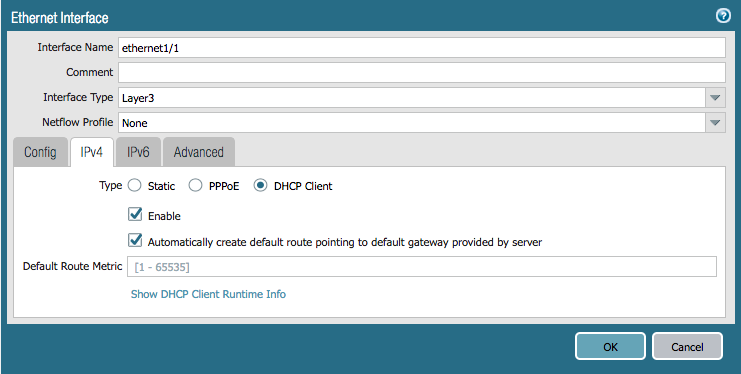
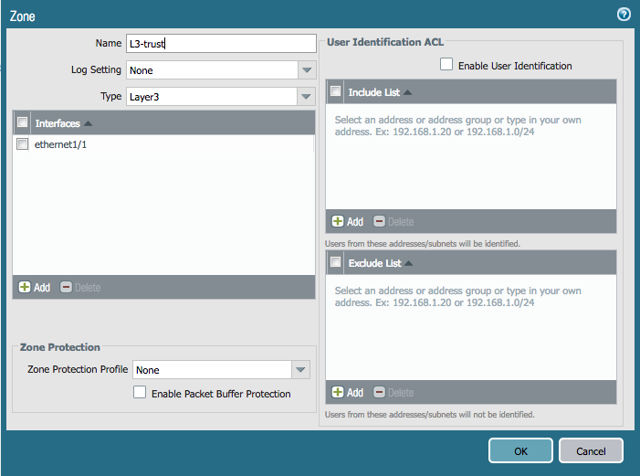
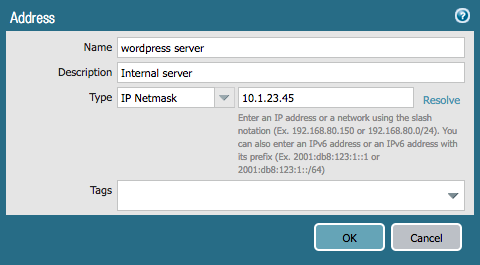
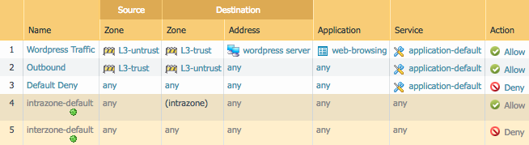

Terraform Lab Activities
Task 1 - Basic Networking Config
Create a new empty directory called terraform-lab to work in. We'll use it
for all of our Terraform files.
Open a text editor like vim, emacs, or nano and create the file
sko2019.tf. We will place our Terraform plan in here.
Start by defining the provider config, which will use the panos provider.
Replace the IP address used in hostname with the address of your lab
firewall, and change the username and password fields to the values
you have used.
provider "panos" {
hostname = "127.0.0.1"
username = "admin"
password = "admin"
}
Network Interfaces
Next, create the interfaces. Here are screenshots of the interfaces we need to create:


Add the following configuration to sko2019.tf. Note that the ethernet1/2
interface omits the option to create the default route via DHCP.
resource "panos_ethernet_interface" "eth1" {
name = "ethernet1/1"
vsys = "vsys1"
mode = "layer3"
enable_dhcp = true
create_dhcp_default_route = true
}
resource "panos_ethernet_interface" "eth2" {
name = "ethernet1/2"
vsys = "vsys1"
mode = "layer3"
enable_dhcp = true
}
Refer to the provider documentation for ethernet interfaces for more info if you need.
Zones
Next, create zones for the interfaces we just added. Here are screenshots of the zones we need to create:


Add the following configuration to sko2019.tf. The interfaces are referenced
by name, so that Terraform automatically knows that the interfaces need to be
created before the zones themselves.
resource "panos_zone" "int" {
name = "L3-trust"
mode = "layer3"
interfaces = ["${panos_ethernet_interface.eth1.name}"]
}
resource "panos_zone" "ext" {
name = "L3-untrust"
mode = "layer3"
interfaces = ["${panos_ethernet_interface.eth2.name}"]
}
Refer to the provider documentation for zones if you need.
Apply the Terraform Plan
Your final, full sko2019.tf file should look something like this:
provider "panos" {
hostname = "127.0.0.1"
username = "admin"
password = "admin"
}
resource "panos_ethernet_interface" "eth1" {
name = "ethernet1/1"
vsys = "vsys1"
mode = "layer3"
enable_dhcp = true
create_dhcp_default_route = true
}
resource "panos_ethernet_interface" "eth2" {
name = "ethernet1/2"
vsys = "vsys1"
mode = "layer3"
enable_dhcp = true
}
resource "panos_zone" "int" {
name = "L3-trust"
mode = "layer3"
interfaces = ["${panos_ethernet_interface.eth1.name}"]
}
resource "panos_zone" "ext" {
name = "L3-untrust"
mode = "layer3"
interfaces = ["${panos_ethernet_interface.eth2.name}"]
}
Let's apply the config to our firewall. You need to run terraform init first
to download all the providers we need, and then check your config with
terraform plan:
$ terraform init
$ terraform plan
If there are no errors, go ahead and push your config updates the firewall:
$ terraform apply
Log in to the GUI of your firewall and verify that the configuration matches what you want. Note that because of the way Terraform currently functions, the changes have only been made to the candidate configuration and have not been committed.
Task 2 - Objects and Security Rule Creation
Next, we will create an address object and some security rules.
Here is a screenshot of an address object we need to create:

Add the following to sko2019.tf:
resource "panos_address_object" "wp" {
name = "wordpress server"
description = "Internal server"
value = "10.1.23.45"
}
Refer to the provider documentation for address objects if you need.
Now, here is a screenshot of security rules that we need to create:

Add the following to sko2019.tf. Just like with the networking config, zones
and objects are referenced by name, so that Terraform knows they need to be
created before our security rules.
resource "panos_security_rule_group" "policy" {
rule {
name = "Wordpress Traffic"
source_zones = ["${panos_zone.ext.name}"]
source_addresses = ["any"]
source_users = ["any"]
hip_profiles = ["any"]
destination_zones = ["${panos_zone.int.name}"]
destination_addresses = ["any"]
applications = ["web-browsing"]
services = ["application-default"]
categories = ["any"]
action = "allow"
}
rule {
name = "Outbound"
source_zones = ["${panos_zone.int.name}"]
source_addresses = ["any"]
source_users = ["any"]
hip_profiles = ["any"]
destination_zones = ["${panos_zone.ext.name}"]
destination_addresses = ["any"]
applications = ["any"]
services = ["application-default"]
categories = ["any"]
action = "allow"
}
rule {
name = "Default Deny"
source_zones = ["any"]
source_addresses = ["any"]
source_users = ["any"]
hip_profiles = ["any"]
destination_zones = ["any"]
destination_addresses = ["any"]
applications = ["any"]
services = ["application-default"]
categories = ["any"]
action = "deny"
}
}
Apply the Terraform Plan
Let's apply the config to our firewall. We don't need to run terraform init
again, so just check your config with terraform plan:
$ terraform plan
If there are no errors, go ahead and push your config updates the firewall:
$ terraform apply
Log in to the GUI of your firewall and verify that the configuration matches what you want. Again, the changes have only been made to the candidate configuration and have not been committed.
Task 3 - Cleanup
Terraform will clean up our config for us with the terraform destroy command.
Run it to prepare for the Ansible portion of the lab:
$ terraform destroy
You're done with the Terraform portion of the lab.